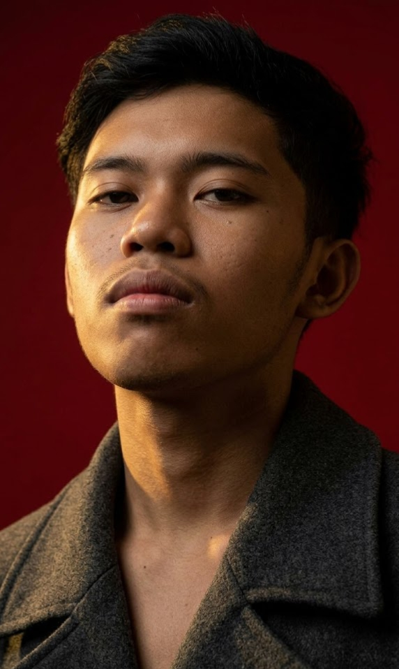
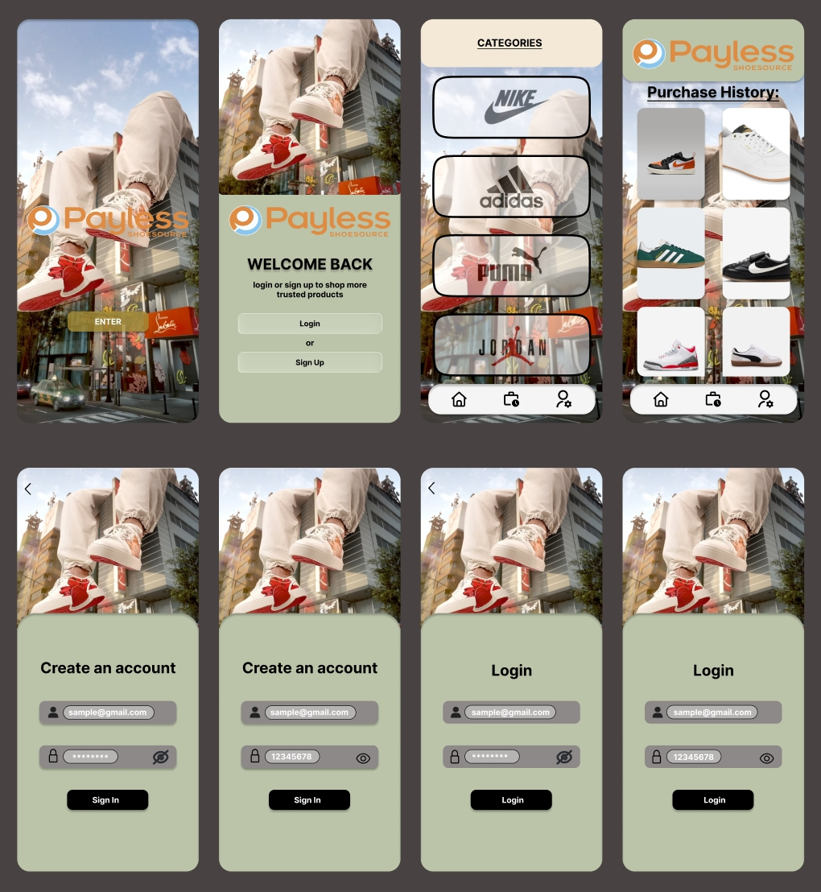
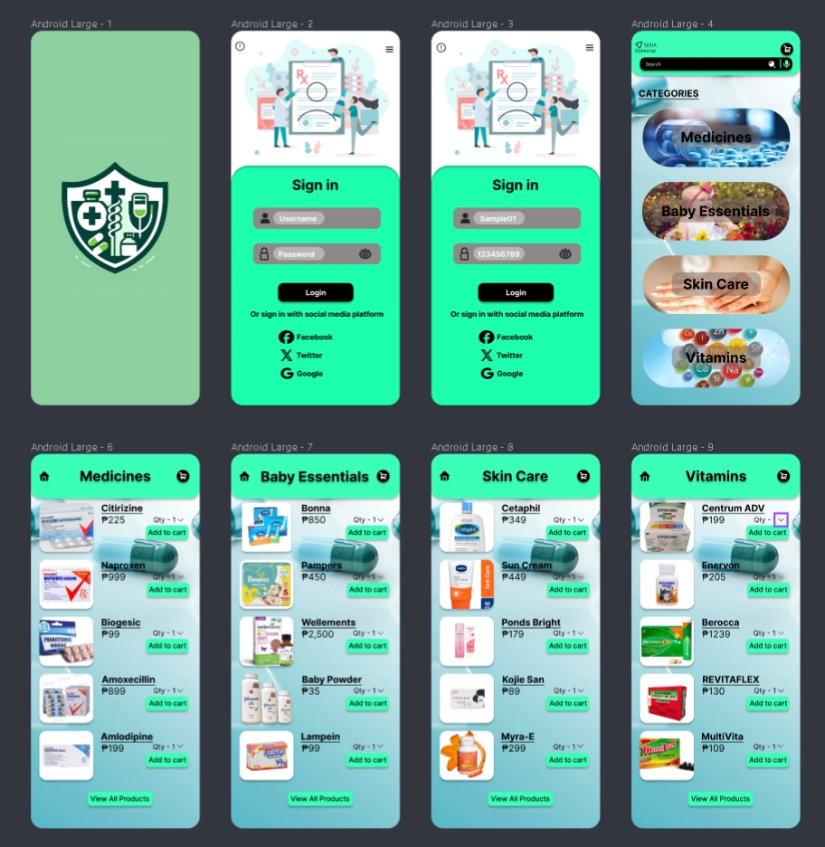
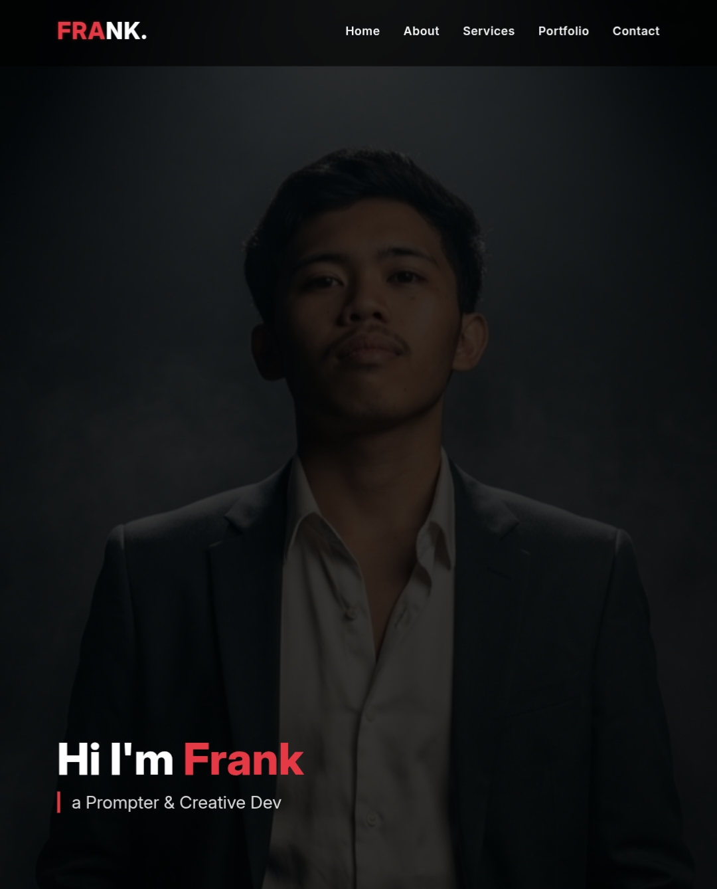

Hi, I’m Frank, a BS Information Technology student who approaches every project with hard work, critical thinking, and a passion for solving real-world problems. I thrive both independently and as an active member of the school community, constantly seeking opportunities to grow. While my strengths lie in analyzing systems and writing clean code, I’ve also developed a strong eye for design - bringing ideas to life through Figma prototypes and responsive web development. My portfolio reflects the intersection of technical depth and thoughtful user experience, and I’m excited to keep building solutions that make a difference.
SKILLS
EXPERIENCE
EDUCATION
I specialize in wireframing, prototyping, and visual design, leveraging tools like Figma to craft user-friendly and captivating designs. By combining artistic vision with technical precision, I create meaningful and functional user experiences that align with modern standards and client goals.
Learn more →From capturing striking moments to producing high-quality photo and video content, I excel in delivering compelling visuals. My expertise in photography and editing allows me to create vibrant and impactful imagery tailored for personal, social, or commercial purposes.
Learn more →


Where code meets creativity, and design tells a story. I’m Frank Armand - a BS Information Technology student with a passion for crafting intuitive digital experiences, stunning visuals, and meaningful interactions. From Figma wireframes and responsive websites to photography and multimedia editing, my portfolio is a showcase of curiosity turned into craft. Dive in and see how I blend technical precision with artistic vision, one project at a time.
tanaleonfrank@gmail.com
09514369302
© Frank Armand 2026. All rights reserved. Built with passion.